Vault 1 · The Gospel · Charts
Ten charts that walk through the six panels: the question, why John’s Gospel, the one condition, no additions, assurance, and John 3:16 in every language. Click any chart to see it full size, or download them all for a class or small group.
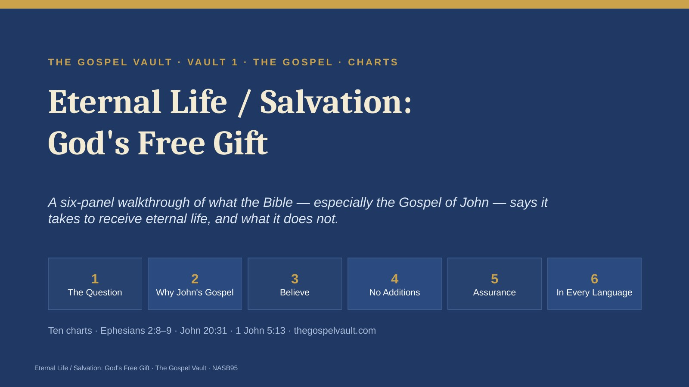
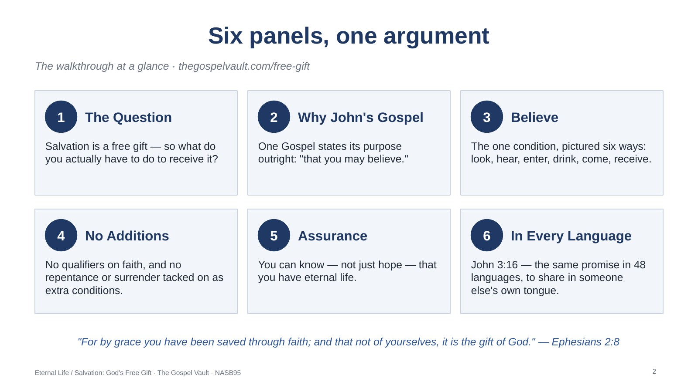
The walkthrough at a glance · thegospelvault.com/free-gift
Use this map to show the group where the walkthrough is going. Panels 1–2 raise the question and pick the right place to answer it; Panels 3–4 state the one condition and clear away the additions; Panel 5 grounds assurance in God’s Word; Panel 6 puts John 3:16 in the hands of every listener in his or her own language.
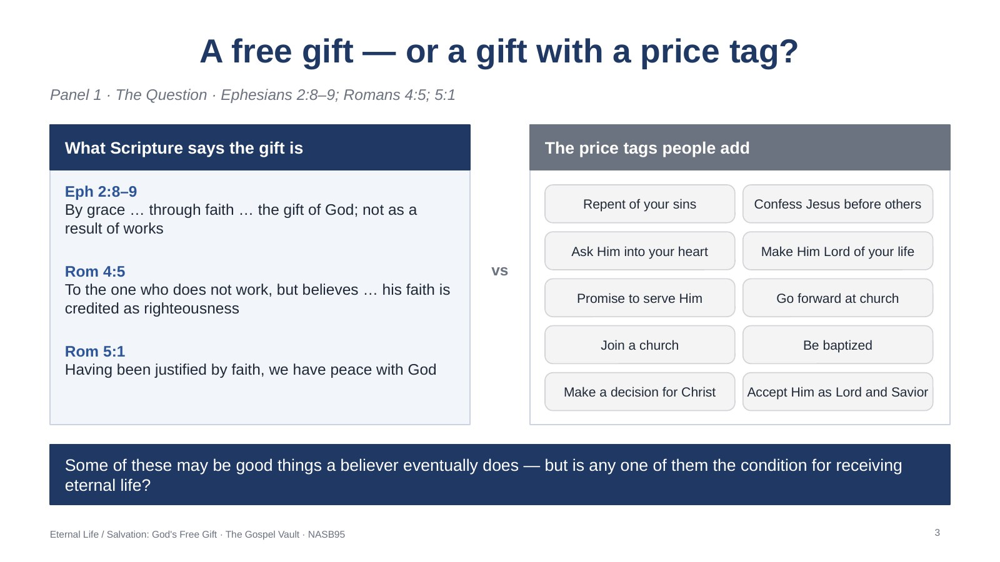
Panel 1 · The Question · Ephesians 2:8–9; Romans 4:5; 5:1
Ask almost anyone whether salvation is a free gift and the answer comes fast — of course it is — backed by Ephesians 2:8–9, Romans 4:5 and Romans 5:1. Then comes the second question: what does one actually have to do to be saved? Ask around and the free gift quietly grows a price tag. The series answers by asking what the Bible itself says the condition is — not tradition or personal experience — starting with the one Gospel that says exactly why it was written.
For reflection:
1. Which of the answers above have you personally heard — or believed — was necessary for salvation?
2. If salvation really is a free gift, what would it mean for something to be added to "gift" as a condition?
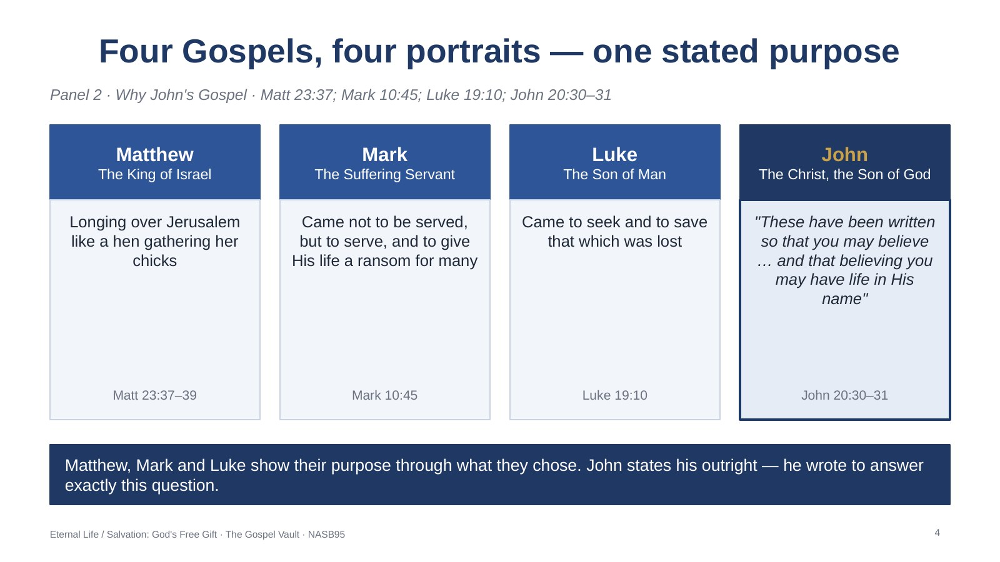
Panel 2 · Why John’s Gospel · Matt 23:37; Mark 10:45; Luke 19:10; John 20:30–31
The Gospels were never meant to be complete biographies (John 21:25); each writer chose events to serve his purpose. Matthew presents Jesus as the King of Israel; Mark as the Suffering Servant; Luke as the Son of Man, Savior of the world. John is different: he states his purpose outright in John 20:30–31. He builds his Gospel around it — seven signs, seven "I am" statements, opening and closing on the same note: Jesus is the Christ, the Son of God.
For reflection:
1. Which of the three purposes — King, Suffering Servant, Savior of the world — had you not noticed emphasized in the Gospels before?
2. John wrote so "that you may believe." Before this, what did you think the condition for eternal life actually was?
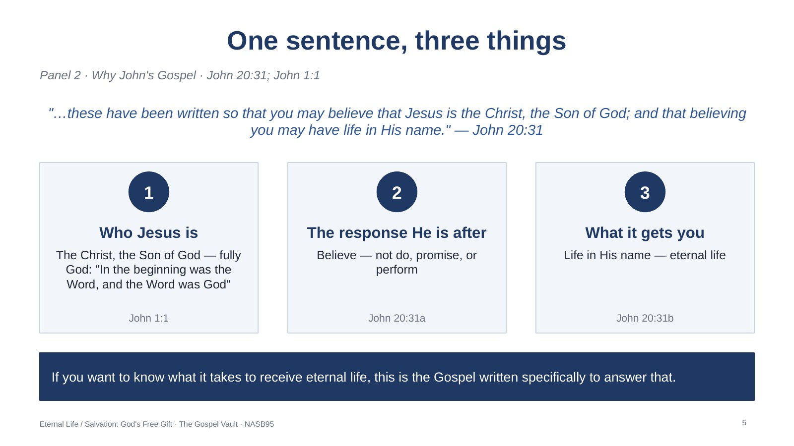
Panel 2 · Why John’s Gospel · John 20:31; John 1:1
Three things are packed into John 20:31 — who Jesus is (fully God, John 1:1), what response He is after (belief), and what that response gets you (life in His name). Not Matthew’s kingship, not Mark’s servanthood, not Luke’s rescue narrative, but John’s direct evangelistic appeal.
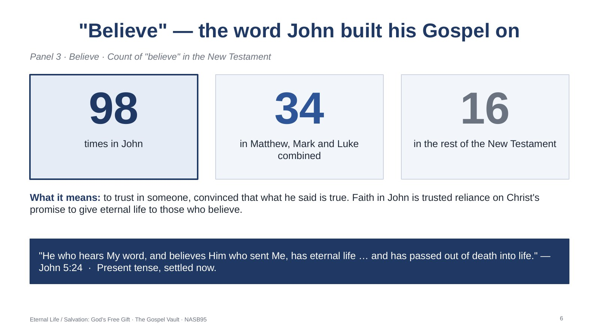
Panel 3 · Believe · Count of "believe" in the New Testament
John uses "believe" 98 times — more than the other three Gospels combined (34) and more than six times the rest of the New Testament (16). Believe means trust in someone, and assumes you are convinced that what he said is true; the two are not really separable. What does believing get you? Not a probationary status — eternal life, present tense, right now (John 5:24).
For reflection:
2. John 5:24 says the one who believes "has" eternal life and "has passed" from death into life — both settled, not pending. Does your own sense of assurance match that tense?
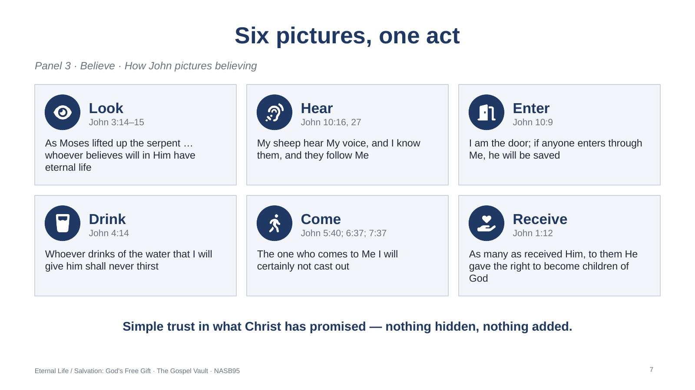
Panel 3 · Believe · How John pictures believing
John pictures the one act of believing six different ways so no one mistakes it for something complicated: look (3:14–15), hear (10:16, 27), enter (10:9), drink (4:14), come (5:40; 6:37; 7:37), receive (1:12). Six pictures, one act: simple trust in what Christ has promised.
For reflection:
1. Which picture — looking, hearing, entering, drinking, coming, or receiving — best describes what happened when you first believed?
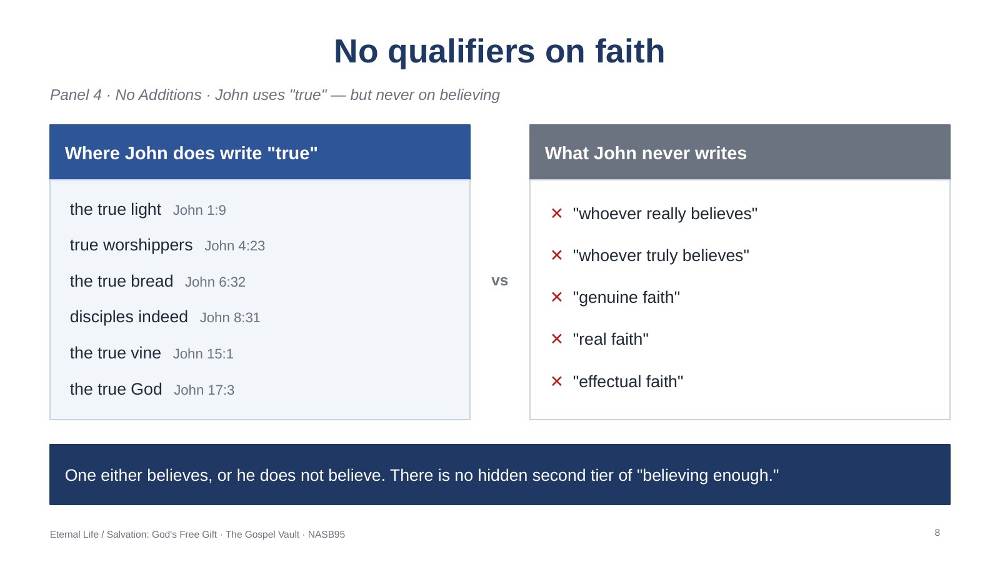
Panel 4 · No Additions · John uses "true" — but never on believing
Look for qualifiers on "believe" in John and you won’t find them — no "really," "truly," "genuine," "real" or "effectual" faith. That isn’t because John avoids the word "true": he uses it of the light (1:9), worshippers (4:23), the bread (6:32), disciples (8:31), the vine (15:1) and God (17:3). He simply never attaches it to believing.
For reflection:
1. Have you ever heard salvation described with an added qualifier — "really" believe, "truly" surrender, "fully" commit? How does removing that qualifier change your own confidence?
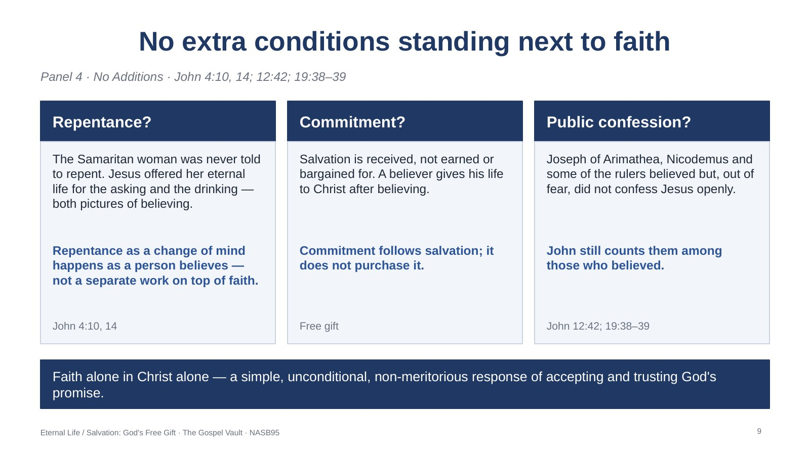
Panel 4 · No Additions · John 4:10, 14; 12:42; 19:38–39
There is no separate condition standing next to faith. Repentance: the Samaritan woman (John 4) had had multiple husbands, was living with a man not her husband and tried to deceive Jesus — yet He never told her to repent; He offered living water for the asking (4:10) and the drinking (4:14). Understood as a change of mind, repentance happens as a person believes. Commitment: salvation is absolutely free and not conditioned on human merit; commitment follows salvation. Confession: John shows "secret disciples" — Joseph of Arimathea (19:38), Nicodemus (19:39) and some of the rulers (12:42) — and still counts them among those who believed. If we are going to defend the faith, we start by defending faith alone in Christ alone.
For reflection:
2. The Samaritan woman received eternal life without a call to repentance or reform. What does that tell you about what — and who — actually saves?
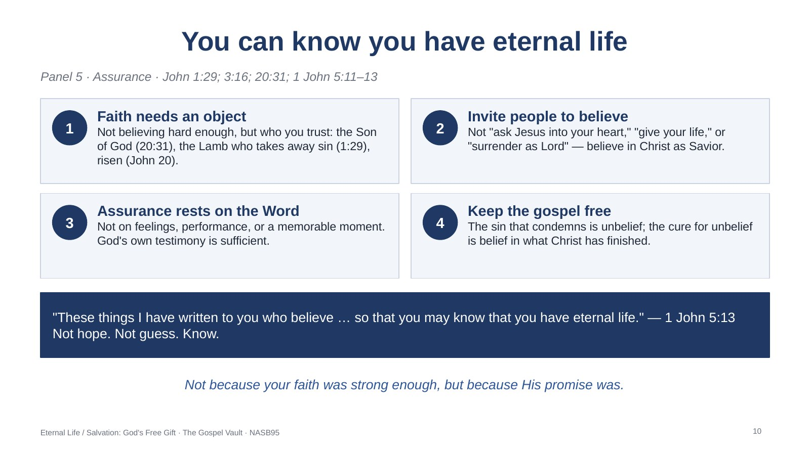
Panel 5 · Assurance · John 1:29; 3:16; 20:31; 1 John 5:11–13
Four things to carry from the walkthrough. (1) Faith needs an object — give people something real to believe: He is the Son of God (John 20:31), He died for our sins (John 1:29), and He rose again (John 20). (2) The invitation is to believe in Christ as Savior; phrases like "ask Jesus into your heart" are not Scripture’s vocabulary for receiving eternal life and make a simple gift sound like a negotiation. (3) Assurance rests on the Word (1 John 5:13); other evidences may support it, but God’s own testimony is sufficient. (4) Keep the gospel free: to John the sin that condemns is unbelief, and the cure is belief.
For reflection:
1. If someone asked you today how they could know for certain they have eternal life, what would you point them to first?
2. Where has your own assurance been resting more on a feeling or a memory than on the plain word of Scripture?
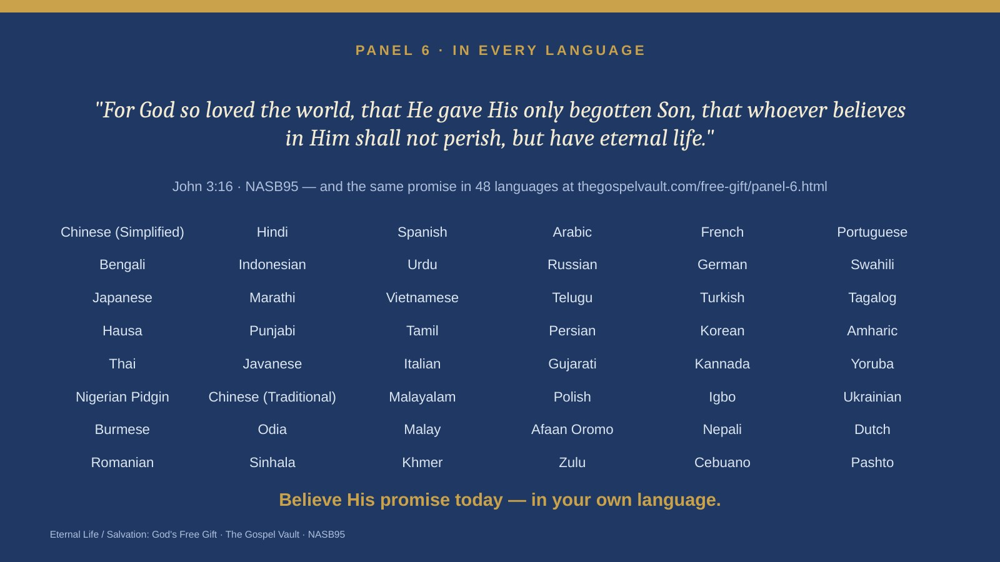
Panel 6 · John 3:16 in 48 languages
The walkthrough closes with John 3:16 in 48 languages so it can be shared in someone else’s own tongue. Open the panel on a phone and let a listener read the promise in his or her heart language. Invite: believe His promise today.
The PowerPoint shows each chart as a full-slide picture, with the notes above on every slide.